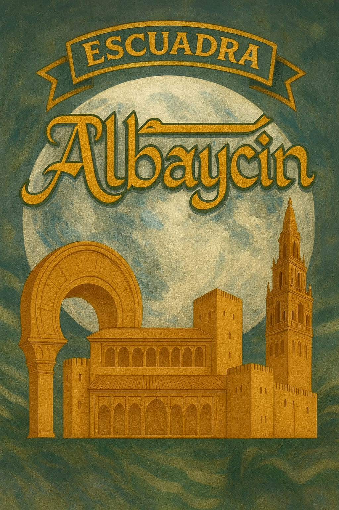
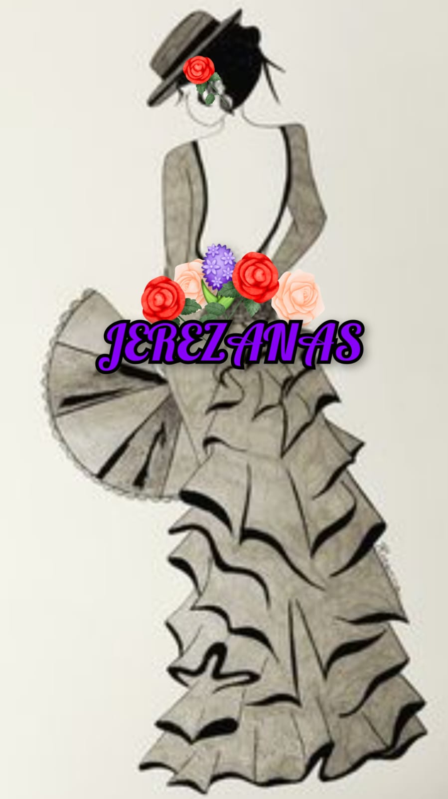
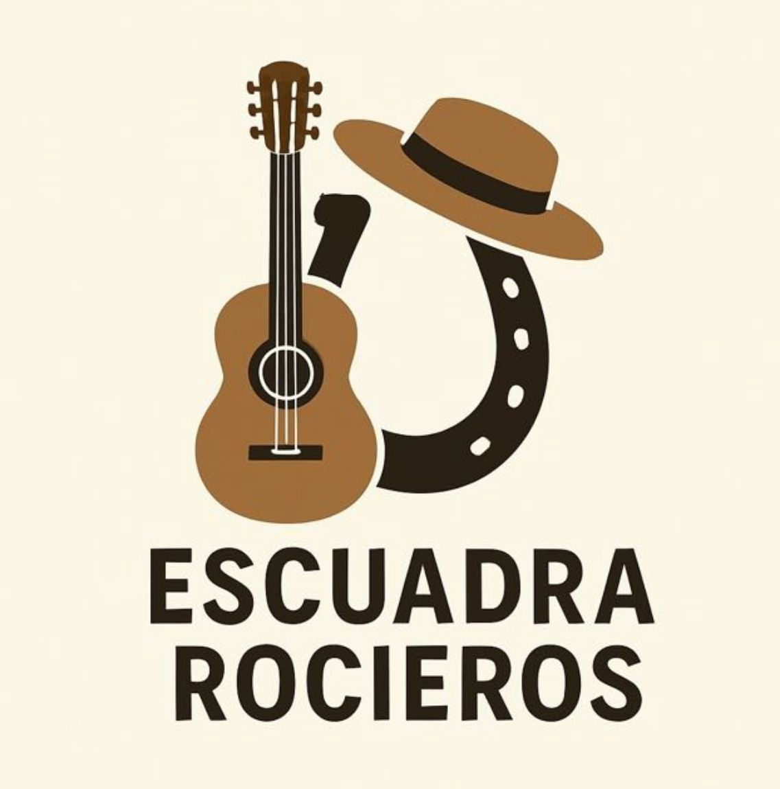
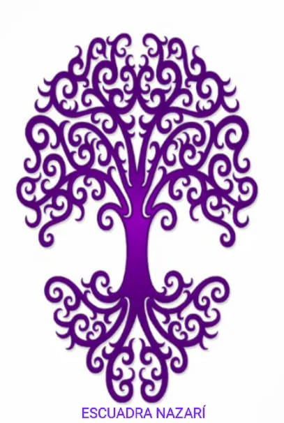
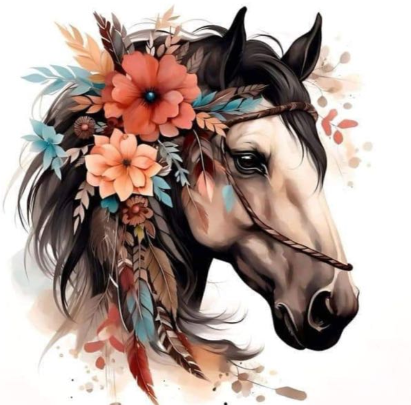

Escuadras
Escuadra Albaycín
Albaycín es un grupo cristiano que lleva con orgullo el nombre del histórico barrio granadino, símbolo de cultura, tradición y belleza. Inspirada en las calles empedradas, los miradores y la esencia andaluza, esta escuadra destaca por su unión, su fuerza y su pasión en cada desfile. Sus componentes, como una auténtica familia, defienden la hermandad, el respeto y el compañerismo, haciendo de cada acto una muestra de elegancia, disciplina y amor por las fiestas. El Albaycín no es solo un nombre, es un sentimiento que se lleva en el corazón y se muestra con honor en cada paso.
Leer másEscuadra Jerezanas
Jerezanas es la escuadra fundadora de mujeres que representan a una provincia de Andalucía. Sus integrantes con mucho orgullo e ilusión, vivirán y transmitirán el arte de Jerez y de Andalucía en nuestras fiestas de moros y cristianos de mutxamel. Están deseando disfrutar de ellas desfilando en la rambla todas juntas.
Leer másEscuadra Sacromonte
Sacromonte es una escuadra mixta que destaca por su elegancia, fuerza y simbolismo. Inspirada en las raíces históricas del Sacromonte granadino, fusiona tradición, nobleza y espíritu guerrero. Sus integrantes desfilan con trajes espectaculares. representando el valor, la fe y la unidad de su grupo. Sacromonte no solo es una escuadra, es un estandarte de orgullo, historia y pasión cristiana en cada desfile.
Leer másEscuadra Rocieros
Rocieros es una escuadra mixta de adolescentes de varias edades. Sus miembros vienen de padres festeros y quieren disfrutar de las fiestas
Leer másEscuadra Nazarí
Fundamos la comparsa andaluces con mucha ilusión y muchas ganas de formar esta gran família que a día de hoy somos. Han costado lágrimas y malos ratos conseguirlo pero gracias a la unión y esfuerzo de todos se ha logrado. La escuadra Nazarí nace del amor y el respeto por esta tradición que son nuestras fiestas, ha tenido altibajos pero gracias al apoyo incondicional de nuestro presidente Javier Sola y varios componentes más de esta familia que son los Andaluces se ha logrado algo que para muchos es algo más que una ilusión es algo que llevamos por dentro es arte, amor,pasión y sobre todo respeto. Somos como un árbol enraizándose en lo más hondo de nuestros corazones, unidos por la fiesta y la tradición. Y por último pero no menos importante esta escuadra recuerda a los festeros que ya no están con nosotros pero llevamos en el alma.
Leer másEscuadra Jaleo
Jaelo es la escuadra de los más pequeños. Aquí se encuentra un grupo mixto de niños pequeños, que tal y como dice su nombre, dan Jaleo. Ellos no son unicamente los pequeños de la comparsa si no que son nuestro futuro.
Leer más